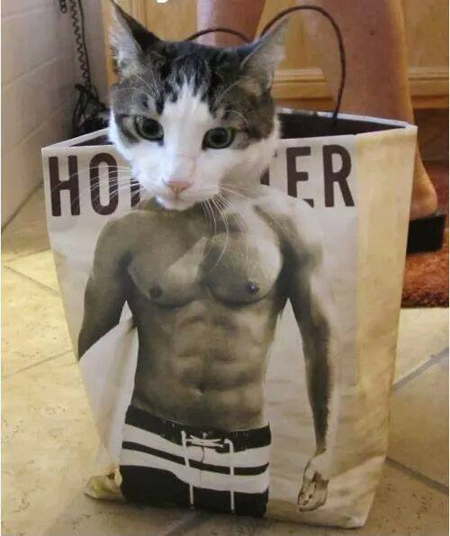

My Portfolio is more than just the work that I've done and programming.
As you can tell by the theme of my webpage, I am a proud Harry Potter fan
reading all 7 books, and proudly placed into the ravenclaw house from the
pottermore placement quiz :). Not only am I a code geek but I am also a gym
rat, I work out 2-3 times a week to maintain my healthy physic. I also enjoy
listening to music, dancing, and also play a bit of video games.

What inspired me to choose the software development career?:
Beginning at 9 years old, I've been doing web developement since elementary school.
3rd grade was my beginning stage of having my own social media account and email
account; Before facebook, our social media pages were either livejournal or xanga, and
basically the fad was to have the most stand out profile in either xanga/livejournal,
I would sometimes spend countless hours on working my xanga profile; fondling with html,
css, and javascript code. One of the first ever applications I have ever wrote was an
error handling application that would prevent users from right clicking on my profile.
Fondling with code always fascinated me, and I got hooked ever since I wrote my first ever
application.